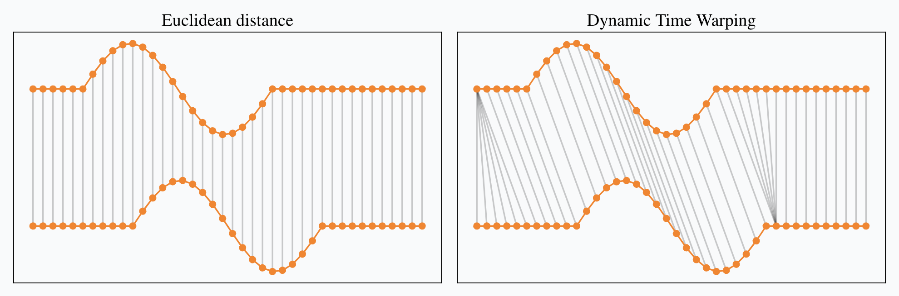
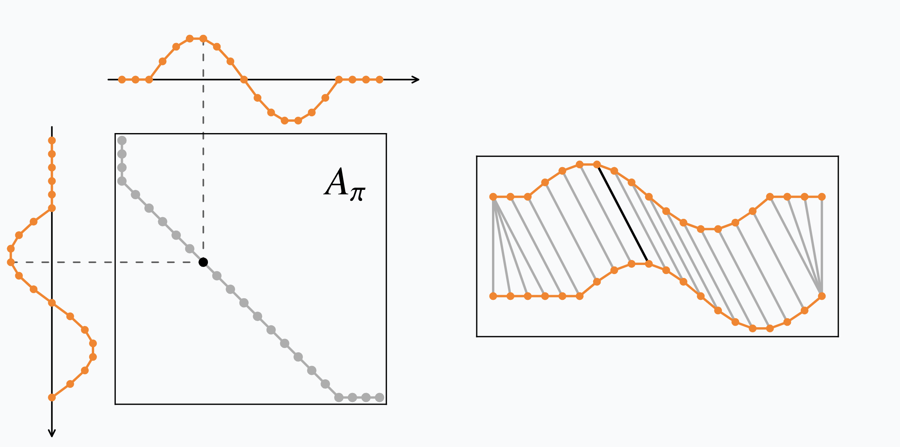
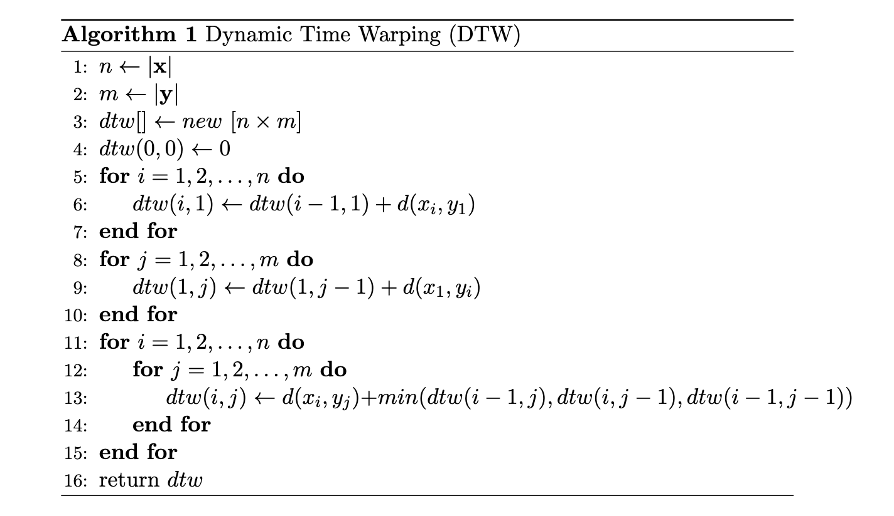
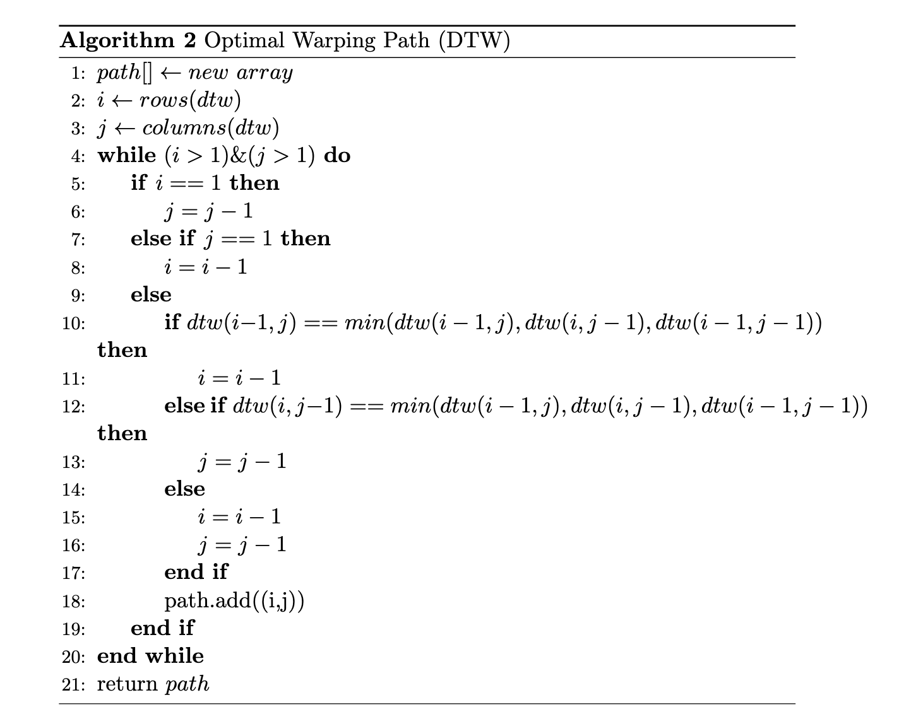
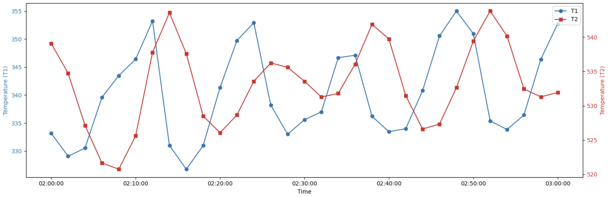
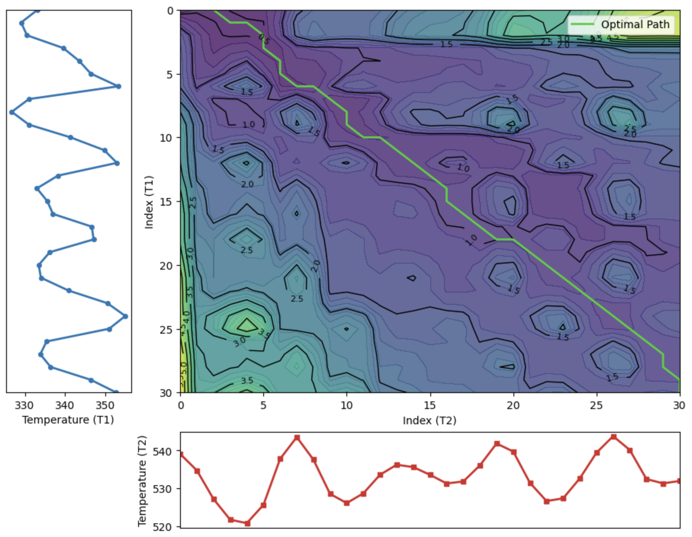
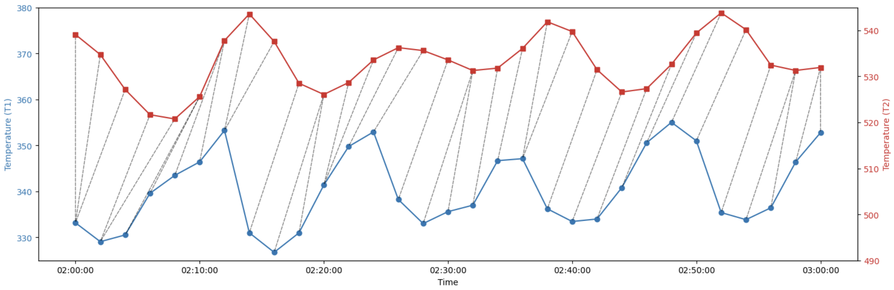

动态时间规整
动态时间规整（DTW）
DTW 算法简介
动态时间规整（Dynamic Time Warping，DTW）是用于评估两个时间序列相似性的算法，它的核心在计算两个时间序列相似性之前会先进行对齐。
假设有两个时序序列 \(\mathbf{x}=[x_0,x_1, ..., x_{n-1}]\)，\(\mathbf{y}=[y_0, y_1, ..., y_{m-1}]\)，先假设这两个时间序列是等长的，即 \(n=m\)。如果要计算它们的相似度，对于欧式距离（欧几里得距离，Euclidean distance）来说，可以表示为
\[ d(\mathbf{x}, \mathbf{y}) = \sqrt{(x_0-y_0)^2 + (x_1-y_2)^2 + \ ... \ + (x_{n-1}-y_{m-1})^n}, \ \ n=m \tag{1} \]
而 DTW 是返回所有的时间对齐路径中最小的欧式距离，可以表示为
\[ DTW(\mathbf{x}, \mathbf{y}) = \min\limits_{\pi \in \mathcal{A}(\mathbf{x}, \mathbf{y})} \sqrt{\sum_{(i,j) \in \pi}{d(x_i, y_j)^2}} \tag{2} \]
其中，\(\pi\) 表示对齐路径，是一个长度为 \(k\) 的索引对 \(\left( \ (i_0, j_0), \ ... \ , (i_{k-1}, j_{k-1}) \ \right)\)；\(\mathcal{A}(\mathbf{x}, \mathbf{y})\) 是是所有可接受对齐路径的集合；\(d(x_i, y_j)\) 可以表示为 \(d(x_i, y_j) = \sqrt{(x_i-y_j)^2} = |x_i-y_j|\)。一条路径若要被视为可接受路径，必须满足以下条件：
（1）时间序列的开始和结束要匹配在一起，即：
（a）\(\pi_0 = (0,0)\)
（b）\(\pi_{k-1} = (n-1, m-1)\)
（2）在路径中时序序列索引 \(i\) 和 \(j\) 应该满足单调递增，且至少出现一次，即：
（a）\(i_{q-1} \le i_{q} \le i_{q-1} + 1\)
（b）\(j_{q-1} \le j_{q} \le j_{q-1} + 1\)

图可以明显看出欧氏距离（左）和动态时间规整（DTW，右）来计算两个时间序列之间的相似度的区别。图中灰线表示一个匹配关系或者说是对齐路径中的一个索引对 \((i,j)\)，所有的灰线就是一个对齐路径 \(\pi\)（在 DTW 中这个 \(\pi\) 也是最优，即满足最小欧式距离）。当然了左图中欧式距离的匹配关系是固定，始终保证垂直对应（同时刻对应），即满足 \(i=j\)。
DTW 的矩阵形式
DTW路径可以用二进制矩阵表示，其中非零元素 1 表示对应的时间序列元素是匹配的，和上面对齐路径中 \(\pi\) 的一个索引对 \((i,j)\) 是等价的。
\[ (A_{\pi})_{i,j} = \begin{cases} 1, & if \ (i, j) \in \pi \\ 0, & otherwise \end{cases} \tag{3} \]

左图中的灰色线表示一条对齐路径 \(\pi\)，灰色点表示一个索引对 \((i,j)\) ，在矩阵 \(A_{\pi}\) 中灰色点为 1，其余为 0。
因此，动态时间规整可以写成矩阵之间点积的最小化：
\[ DTW(\mathbf{x}, \mathbf{y}) = \min\limits_{\pi \in \mathcal{A}(\mathbf{x}, \mathbf{y})} \sqrt {<A_{\pi}, D(x,y)>} \tag{4} \]
其中，\(D(x,y)\) 存储的为 \(d(x_i, y_j)^2\)，其与式（2）是等价的。
算法实现（动态规划）
虽然按照顺序找出所有的路径 \(\mathcal{A}(\mathbf{x}, \mathbf{y})\) 后计算最小值是困难的（共有 \(O(\frac{(3+2\sqrt{2})^2}{\sqrt{n}})\) 条路径，文章[1]给出，暂未证明），但幸运的是可以使用动态规划找到该优化问题的精确解。动态规划依赖于递归，即将给定问题的解与（更简单的）子问题的解联系起来。一旦知道了这种联系，动态规划方法就会通过递归求解所需的子问题并存储其解以供后续使用（从而避免多次重复计算子问题）来解决原始问题。其算法复杂度为 \(O(nm)\)。
假设有两个时序序列 \(\mathbf{x}=[x_1,x_2, ..., x_{n}]\)，\(\mathbf{y}=[y_1, y_2, ..., y_{m}]\)，计算 \(DTW(\mathbf{x}, \mathbf{y})\) 的伪代码可以表示为：

此外，我们还可以找到最优路径 \(path\)。

时间加权动态时间规整（TWDTW）
时间加权动态时间规整（Time-Weighted Dynamic Time Warping， TWDTW）相较于动态时间规整的主要不同在于：动态时间规整计算两个匹配元素 \((x_i, y_j)\) 的距离为欧式距离，即
\[ d(x_i, y_j) = \sqrt{(x_i-y_j)^2} = |x_i-y_j| \tag{5} \]
而时间加权动态时间规整计算两个匹配元素 \((x_i, y_j)\) 的距离（惩罚）公式为：
\[ c(x_i, y_j) = \sqrt{(1-\alpha)(i-j)^2+\alpha(x_i-y_j)^2} \tag{6} \]
DTW 的应用
文章 [2] 提到 DTW 被设计用来评估两个时间序列相似性，其开始主要用于语音识别，后被用于许多领域：手写和在线签名匹配、手语识别和手势识别，数据挖掘与时间序列聚类（时间序列数据库检索）、计算机视觉与计算机动画、监视、蛋白质序列比对与化学工程、音乐和信号处理。但这里我们主要是介绍 DTW 的变形—时间加权动态时间规整在寻找两个时间序列的时滞关系的应用。
寻找两个时间序列的时滞关系
假设有两个温度测点，分别位于蒸汽加热器管道入口处和出口处，我们采集它们的一段历史趋势可以构成两个时间序列 \(T_1\) 和 \(T_2\)。为了方便阐述和简化计算，我们将采样间隔定位 2 分钟，采集了这两个测点 1 个小时的数据，如下图所示：

利用 TWDTW算法 我们可以获取它们的匹配关系。


参考
[1] Romain Tavenard. An introduction to Dynamic Time Warping[EB/OL]. 2021. https://rtavenar.github.io/blog/dtw.html.
1 | |
[2] Senin, Pavel. Dynamic Time Warping Algorithm Review[R]. Honolulu, HI, USA, 2008.
1 | |
附件
- 文章中伪代码的 latex 代码
1 | |